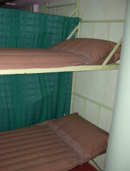
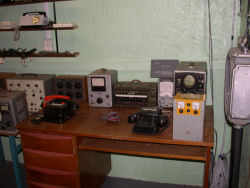
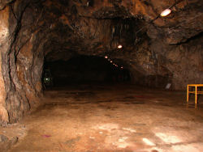

Jeskyně Výpustek
Cave Výpustek
Useful Information
|  |
| Image: beds in the bunker area. |
| Location: | West of Křtiny. (49°17'28.97"N, 16°43'24.79"E) |
| Open: |
JAN to MAR Tue-Sun 10, 11, 13, 14. APR Tue-Sun 9-14, hourly on the hour. MAY to AUG daily 8:20-16. SEP daily 9-16, hourly on the hour. OCT to NOV Tue-Sun 9-14, hourly on the hour. DEC Mon-Fri 10, 11, 13, 14. Closed 24-DEC to 26-DEC, 01-JAN. [2010] |
| Fee: |
Adults CZK 100, Children (6-15) CZK 50, Children (0-5) free, Students CZK 50, Disabled CZK 50, Seniors CZK 80. Photography Permit CZK 30, Video Permit CZK 100. [2010] |
| Classification: |
 Karst cave Karst cave
|
| Light: | electric. |
| Dimension: | |
| Guided tours: | |
| Photography: | |
| Accessibility: | |
| Bibliography: | |
| Address: |
Jeskyně Výpustek, Robert Dvořáček, 67905 Křtiny 187, Tel: +420-516-439111.
E-mail: |
| As far as we know this information was accurate when it was published (see years in brackets), but may have changed since then. Please check rates and details directly with the companies in question if you need more recent info. |
|
History
| 1936 | used by the Czechoslovakian army. |
| 1939 | Czechoslovakia occupied by Germany, cave abandoned. |
| 1943 | cave transformed into underground factory by the Germans. |
| 1945 | end of World War II, Germans defeated, cave closed. |
| 1961 | cave transformed into atomic shelter and underground depot. |
| 2000 | closed by Czech army. |
| 26-OCT-2007 | opened as a show cave. |
Description
|  |
| Image: communication equipment from the sixties in the bunker. |
Jeskyně Výpustek (Vypustek cave) is not a cave as you would expect, with stalactites and stalagmites. It is a huge tunnel-like, y-shaped passage, which was used by man for centuries. But the use of the mid 20th century is responsible for its current shape.
After its discovery, the massive layers of bat guano on the floor of the cave were found to be of great value. It was used as fertilizer, and so it was mined for decades. After the guano was completely removed, the deposits exhausted, the cave had grown by 200%. The length was still the same, but the size of the passages had doubled or even tripled.
|  |
| Image: the huge cave passage. |
The bat guano contained much more than just bat droppings. Cave Bears used the cave, and so a huge amount of bear bones were found. Most of them were crushed together with the guano, and also used as fertilizer. Tis worked very well as they were both phosphate rich and made of limestone. Phosphate is a fertilizer and limestone neutralizes acids in the soil and thus also increases growth.
Such a huge cavern, with a road built to the entrance, and the possibility to drive in with cars and lorries, made the cave important during World War II. The German occupiers built a weapon factory inside. The floors were flattened and a concrete basement built which covered the floor of the main passage completely. The cave got electric light too.
After World War II with the start of the Cold War, Czechoslovakia, a member of the Warsaw Pact used the cave as a secret bunker. The whole passage was secured with airtight doors at all three entrances, ventilation shafts with filters were built. The narrower end to the east was used for the construction of a bunker with dormitories, communication rooms, map rooms and everything the inhabitants needed for life. But most of the cave was equipped as a storage room, including heavy machinery and trucks.
At the end of the cold war, in the early 1990s, the cave bunker was abandoned. The was no need any more for such bunkers, and money was lacking too, so the whole bunker was abandoned. But after a few years the people learned, that this was an important tourist destination. The manager of the cave, installed by the military, got the authorisation to show the remaining structures, as all weaponry and machinery was already removed. He created a small museum in the entrance building, with pictures, maps, news paper articles and excerpts from scientific papers.
 |
| Jeskyně Výpustek Gallery |
 Search Google for "Výpustek cave"
Search Google for "Výpustek cave" Google Earth Placemark
Google Earth Placemark Cave Administration of the Czech Republic,
official website.
(
Cave Administration of the Czech Republic,
official website.
(


 )
)